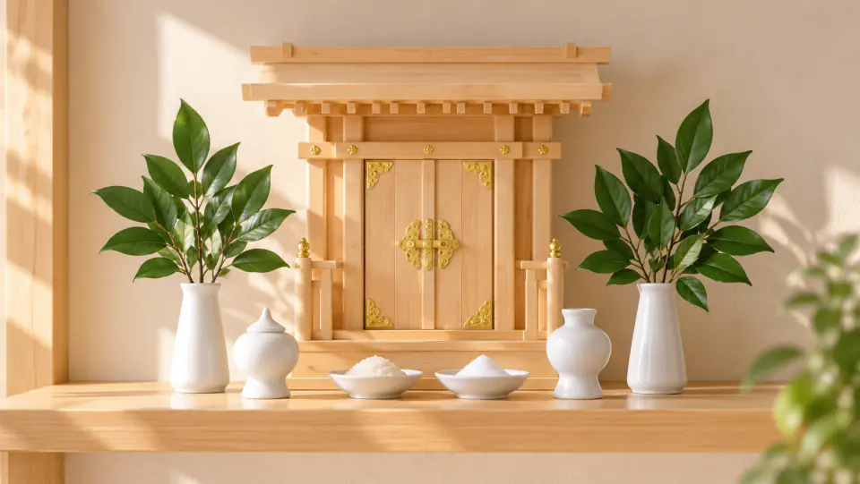

神棚と迎える新しい年｜年神様の意味、お札・しめ縄の整え方と新年の祈り

一年の終わりが近づくと、街には門松や注連飾り（しめかざり）が並び、新しい年を迎える空気が広がります。家庭に神棚がある暮らしでは、年末に神棚を清め、新しいお神札（おふだ）をお迎えして、新年の家族の健康や平穏を祈る習わしが受け継がれてきました。
「なぜお正月にお札を新しくするの？」「年神様とはどんな神様？」「しめ縄やお供えはどう整えればいい？」など、年末年始の準備には疑問も多いものです。
この記事では、年神様をお迎えする本来の意味から、お札の取り替えやお焚き上げ、しめ縄の飾り方、そして現代の住まいで無理なく実践できる新年の祈りと振り返りまでを詳しく解説します。
1. 年神様（歳神様）をお迎えするお正月の本来の意味
私たちが毎年迎える「お正月」は、単にカレンダーの日付が変わる祝日ではなく、それぞれの家々に「年神様（歳神様・正月様）」をお迎えし、新しい年の実りと生命力を授かるための特別な神事でした。
年神様は、古くから日本の農耕文化と深く結びついています。「年」が稲の実りを意味するように、豊かな五穀の実りをもたらす穀物神であり、新しい年の幸福と生命力を授けてくださる神様として尊ばれてきました。
お正月の伝統行事には、すべて年神様をもてなす意味が込められています：
- 門松（かどまつ）： 年神様が迷わずに各家庭へ降り立つための「依代（よりしろ・目印）」です。常緑で生命力の強い松や竹が用いられます。
- 注連縄・注連飾り（しめなわ・しめかざり）： 神聖な清浄の場であることを示し、不浄な災いを遮る結界の役目を果たします。
- 鏡餅（かがみもち）： 家の中に迎え入れた年神様へのお供え物であり、神様が宿る御神体とも考えられてきました。
年末に家中を掃除して神棚を整えるのも、清々しい空間を作って年神様を気持ちよくお迎えするための温かい準備なのです。
2. なぜお札（神札）を新しくするのか？一年の区切りとお焚き上げ
神棚をお祀りしている家庭では、年末に新しいお神札を受け、古いお神札をお返しする風習があります。「なぜ毎年交換するのか？」と疑問に思う方もいるかもしれません。
神棚をおまつりするうえで大切なのは、常に清浄であるとともに、みずみずしい生命力にあふれていることです。毎年正月にお神札や注連縄を新しくするのは、清浄を第一とするとともに、一年の無事に感謝し、正月に若返られた神霊のご加護（いのちの蘇り）を願う伝統的な信仰に基づいています。伊勢神宮の式年遷宮などに代表される、常に清らかで瑞々しい状態を保ち続ける「常若（とこわか）」の思想にも通じる考え方であり、社殿やお神札を定期的に更新することで、日々の暮らしに新たな活力と清々しさを吹き込んできました。
お神札の受け方と納め方
- 受ける時期： 十二月の中旬から下旬にかけて、神社を訪れて受けます。もちろん、初詣の際や年始に受けても問題ありません。
- 古いお神札の返納： 一年間お祀りしたお神札は、受けた神社、または地域の氏神神社の「古札納所（こさつおさめしょ）」へ感謝の気持ちを込めてお返しします。神社では「お焚き上げ（どんど焼き・左義長）」によって清浄に送られます。
- 遠方の神社のお札： 旅先などで授かったお神札で元の神社に参拝できない場合は、最寄りの神社の古札納所の案内や、授かった神社の郵送返納に関する公開案内に従って納めます。
「必ずこの日に替えなければならない」という厳格な義務ではありません。家族の都合や体調に合わせ、無理のない日程で心を込めて準備することが何より大切です。
3. しめ縄・門松の整え方と迎春の準備作法
神棚のしめ縄や正月の飾り付けには、伝統的な目安や作法が存在します。地域によって形状や飾る向きに個性がある点も、日本の年中行事の魅力です。
飾り付けの時期
古くは十二月十三日の「正月事始め（煤払い）」から正月の準備に取りかかり、歳末の吉日を選んで神棚を掃除してから新しいお神札や注連縄を整えてきました。現在も、大掃除を終えた十二月下旬のうちに整え、大晦日ギリギリになる「一夜飾り」は避けるのが一般的です。
神棚のしめ縄と紙垂（しで）
神棚に掛ける注連縄（しめなわ）には、牛蒡注連（ごぼうじめ）や大根注連（だいこんじめ）などがあり、張り方や向きも全国各地でさまざまです（関東以北では神棚に向かって太い方を右にするのが一般的とされます）。ご自身の地域の習慣や神社の案内に合わせて整えてみてください。
4. 現代の住まいで行う新年の祈りと振り返り｜神棚アプリの活用
現代の住宅事情では、壁に神棚の棚板を取り付けられなかったり、年末年始に帰省や仕事で自宅を離れたりする方も少なくありません。「物理的な神棚がないから新年のお参りができない」と諦める必要はありません。
神道における祈りの本質は、豪奢な祭壇の有無ではなく、「日々の生活に感謝し、誠（まこと）の心で手を合わせること」にあります。

一年の節目を整える3つの振り返りステップ
神棚アプリを使って新年の節目を迎える際、次のように祈りと記録を整理してみるのがおすすめです：
- 叶ったことへのお礼： この一年間に無事過ごせたこと、努力が実を結んだこと、支えてくれた周囲への感謝を言葉にして置きます。
- 引き続き祈る願い： 家族の健康や長期的な仕事の取り組みなど、変わらず大切に育みたいテーマを改めて見つめ直します。
- 新しく取り組む誓い： 新しい年に始めたい挑戦や、日々の生活で心がけたい姿勢を、神前の約束（誓願）としてそっと書き留めます。
アプリの中で祈りを文字にしておくことで、前年からの自分自身の歩みや心の変化をいつでも穏やかに振り返ることができます。
5. まとめ：感謝と新たな誓いで清々しい一年の始まりを
お正月は、過ぎ去った日々に「ありがとう」を告げ、これから始まる日々に「よろしくお願いします」と頭を下げる、清らかな再生の時間です。
- 年神様は、新しい年の実りと家族の平穏をもたらす神様。
- お神札の更新は、一年の無事を感謝し、新たな気持ちで神様をお迎えする大切な節目。
- 二十八日頃までに神棚や部屋を整え、二十九日や三十一日の直前飾りは避ける。
- 形にとらわれすぎず、自分の住まいや生活リズムに合わせて感謝と誓いを立てる。
新しい年の幕開けに、まずは静かに息を整え、両手を合わせてみませんか。澄み渡る心で祈るそのひとときが、実り豊かな一年の温かな一歩となるはずです。
忙しい毎日でも続けられる、手軽な祈りの時間
「自宅に神棚を置くスペースがない」「年末年始も忙しくお参りの時間が取れない」とお悩みではありませんか？神棚アプリを使えば、スマートフォンの中で毎日サッと清らかな祈りを捧げ、新年の抱負や感謝を記録できます。忙しい生活リズムを崩すことなく、心に静けさとゆとりをもたらす習慣を、まずはアプリから始めてみませんか。
執筆・参照方針
この記事中の年中行事や神棚の作法、年神様に関する解説は、神社本庁および北海道神社庁が公開する公式案内を参照しています。お札の授与方法やしめ縄の飾り方は、地域や各神社の伝統に合わせてください。